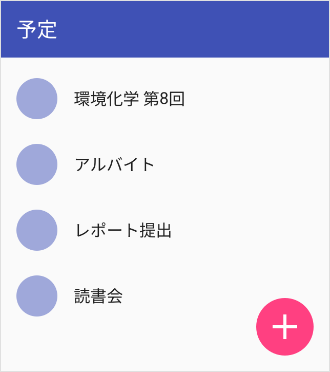

出典 / Source: m1.material.io/components/buttons-floating-action-button.html（2026-11-13 参照）。寸法: 56dp（狭い画面では 40dp）、端から 16dp（タブレット・PC は 24dp）、1 画面に 1 つ。色と書体は M1 の初期値（Indigo 500・Roboto）で KM1 が再描画。/ Redrawn by KM1 from the published specs.